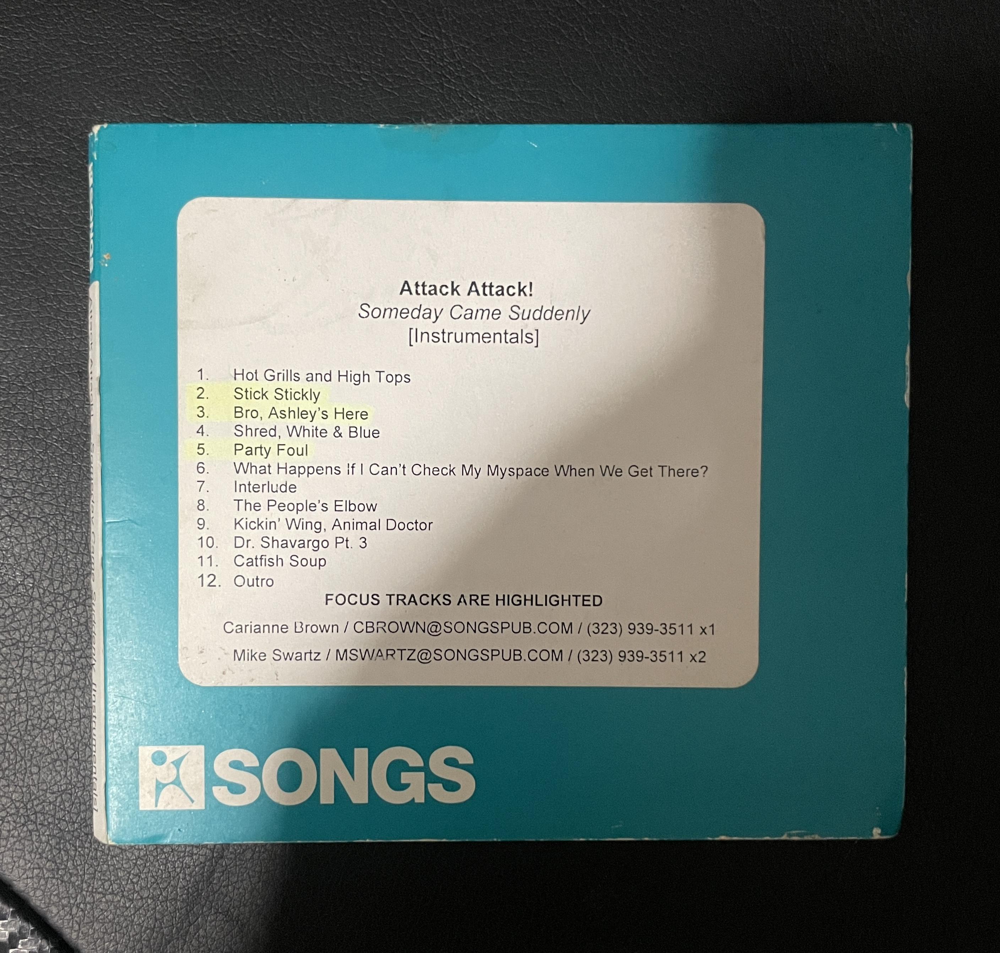

Collection/Rare Memorabilia

I was able to acquire the one and only Caleb Shomo's very own MicroKORG. The very one that was used to record Someday Came Suddenly, fully loaded with all the custom presets Caleb made and used in the album.

Pictured is the Someday Came Suddenly official studio instrumentals, these have never been publically released. This copy was given to music publishers in the lead up to the official studio album release and sold by an ex employee. I gave the digital copies out to a few pepole online which have unfourtunately leaked out now making it not as rare as it once was.